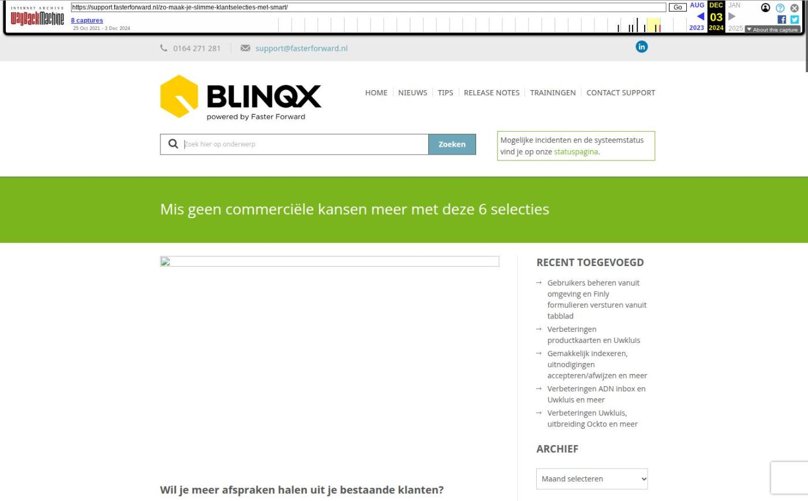

Mis geen commerciële kansen meer met deze 6 selecties

Tekstinhoud
Title: Mis geen commerciële kansen meer met deze 6 selecties | Support
URL: https://web.archive.org/web/20241203201531/https://support.fasterforward.nl/zo-maak-je-slimme-klantselecties-met-smart/
Source element: <article>
---
Wil je meer afspraken halen uit je bestaande klanten?
Stuur dan een gerichte boodschap naar een specifieke klantgroep, met SMART in Elements. We leggen je uit hoe je dit doet en welke selecties resultaat opleveren.
Eenvoudig in 3 stappen:
Selecteer je klantgroep met een SMART selecties
Kies of je deze wilt e-mailen, bellen of een brief wilt sturen
Communiceer een heldere boodschap naar je klantgroep
Met SMART maak je namelijk specifieke selecties binnen je klantenbestand. Wanneer je tevreden bent over de selectie, voer je hier een gerichte actie op uit. Dit kan een taak, campagne of event zijn. Daarnaast is het ook mogelijk om de selectie te exporteren naar Excel.
Er zijn nu ook standaard e-mails beschikbaar om direct een e-mailcampagne uit te voeren naar je klantselectie. Lees hier hoe je deze gratis krijgt als klant van Faster Forward.
Klanten met of zonder een bepaald product
Vanaf heden is het mogelijk om te filteren op klanten met of zonder een specifiek product. Zo zie je klanten die wel product X hebben afgesloten, maar niet product Y. Denk hierbij aan dat de klant wel een hypotheek heeft afgesloten, maar geen inboedelverzekering. Voor deze selectie maak je vervolgens een gerichte campagne om de klant te wijzen op de voordelen van een inboedelverzekering.
6 voorbeelden van slimme selecties
Je kan de selectie zo specifiek maken als je zelf wilt. Om je op weg te helpen, zetten we zes voorbeelden voor je op een rij.
Klanten met een aflossingsvrije hypotheek
Rond 2035 lopen de meeste aflossingsvrije hypotheken af. Tijd voor actie dus. Sommige mensen weten niet dat ze aan het einde van de looptijd nog een hoop geld moeten aflossen. Als de klant onvoldoende inkomen heeft of geen eigen vermogen heeft opgebouwd, kunnen ze in de problemen komen. Ga dus in gesprek om deze problemen te voorkomen.
Klanten zonder inboedelverzekering
Het leven van je klant verandert. Hierdoor zijn er andere of aanvullende verzekeringen nodig, waar de klant zelf niet aan denkt. De klant heeft in de loop der jaren misschien duurdere producten gekocht dan toen hij voor het eerst een woning kocht. Dan is een inboedelverzekering zeer verstandig voor hem. Bovendien verhoog je hiermee zelf de polisdichtheid van je portefeuille.
Klanten met een schadepakket, maar zonder aansprakelijkheidsdekking
Een aansprakelijkheidsverzekering voor particulieren biedt dekking voor schade die ontstaan is uit schuld- en risicoaansprakelijkheid. Voor schades waar de klant voor aansprakelijk gesteld kan worden, biedt deze dekking een oplossing.
Klanten die minstens één hypotheek hebben, maar geen opstalverzekering
Een opstalverzekering is essentieel voor een huiseigenaar. Toch kiest niet iedereen ervoor bij zijn of haar eerste hypotheek. Een mooie kans voor jou als adviseur om je klant te wijzen op de voordelen.
Klanten met rechtsbijstand module A, maar zonder module B
Klanten die een rechtsbijstandverzekering afsluiten, kiezen misschien niet voor alle modules. Bijvoorbeeld wel voor module A: Verkeer & Vakantie maar niet voor module B: Consument en Wonen. Stuur ze daarom een gerichte e-mail om ze te wijzen op de voordelen van module B.
Klanten zonder reisverzekering
Naast bovenstaand voorbeeld kan je dit ook toepassen op klanten die voor de vakantie of wintersportperiode nog geen reisverzekering hebben afgesloten. Zo kunt je deze een gerichte campagne versturen.
Een module in doorontwikkeling
Sinds de lancering zijn we achter de schermen druk bezig om de SMART module door te ontwikkelen. Zo is er inmiddels een tabblad aanwezig waarin je de historie kan bekijken. Hier zie je de naam van de selectie, wie deze heeft aangemaakt en de gekozen actie. In de toekomst voegen we hier meer functionaliteiten aan toe.
In de toekomst gaan we deze module nog verder doorontwikkelen en nieuwe klantselecties toevoegen.
Geplaatst op 1 november 2022 (Laatste update: 06 april 2023)